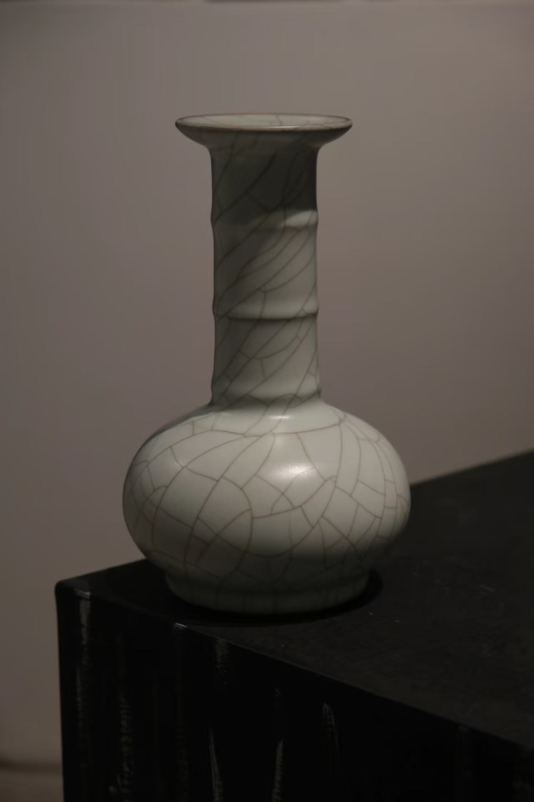
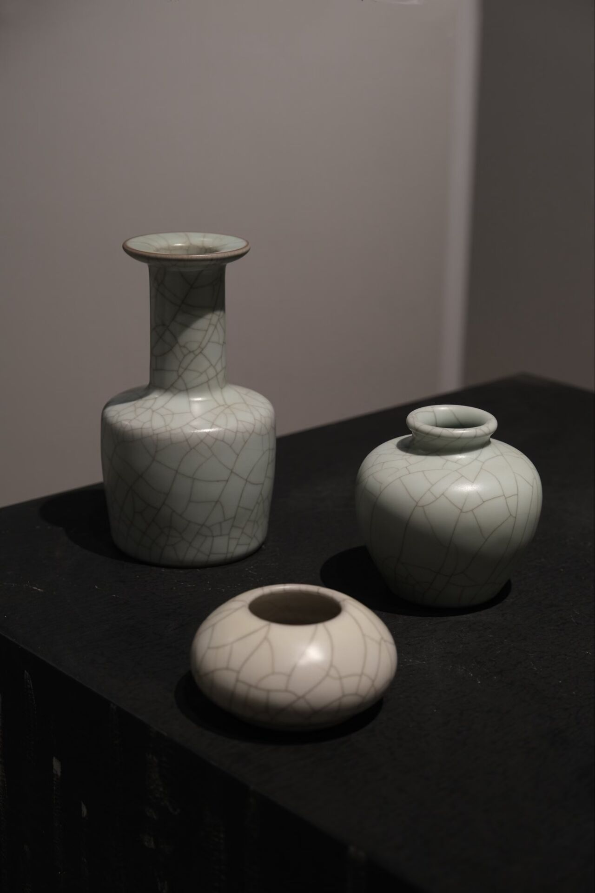
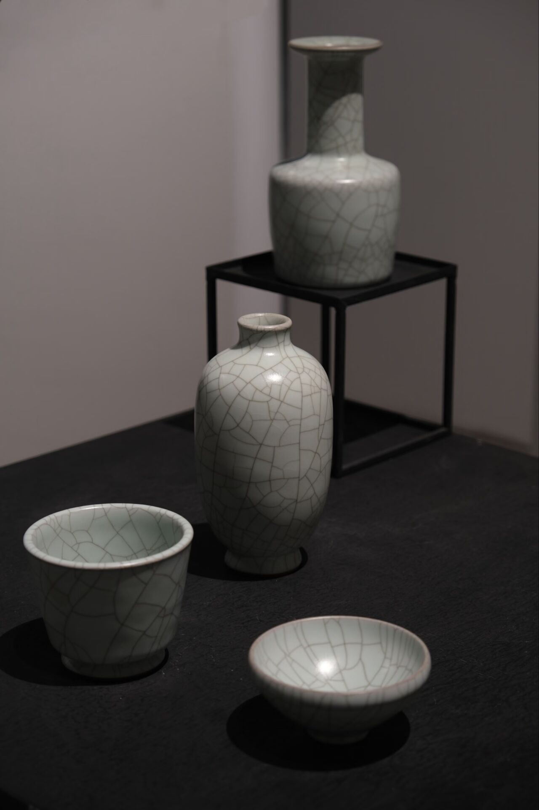

哥窑简介
哥窑是宋代五大名窑中最具神秘色彩的窑口，窑址至今未被明确确认，主流观点推测位于浙江龙泉，也有杭州、景德镇等说法，普遍认为烧造年代为南宋时期，部分观点认为可追溯至北宋晚期，器物多为宫廷用瓷，传世品数量稀少，后世仿品极多。
其造型古朴典雅，以鱼耳炉、胆式瓶、八方杯、葵花洗等陈设瓷和文房用具为主，多借鉴古代青铜礼器造型，线条圆润流畅；胎色深灰或黑褐，胎质坚致，釉层肥厚；核心特征是“金丝铁线”开片，即釉面先形成深色的“铁线”大开片，后在细裂纹中形成黄色的“金丝”小开片，开片由胎釉膨胀系数差异导致，器物无额外刻划印花纹饰。
悬停放大查看细节


